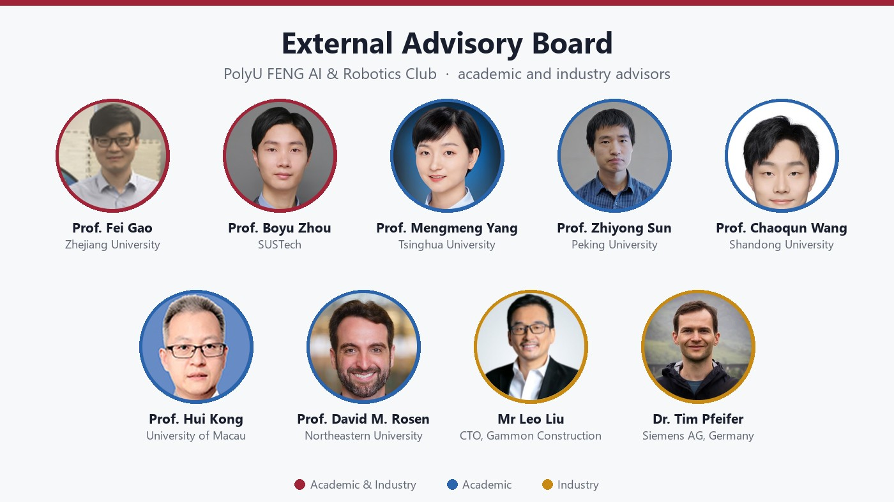
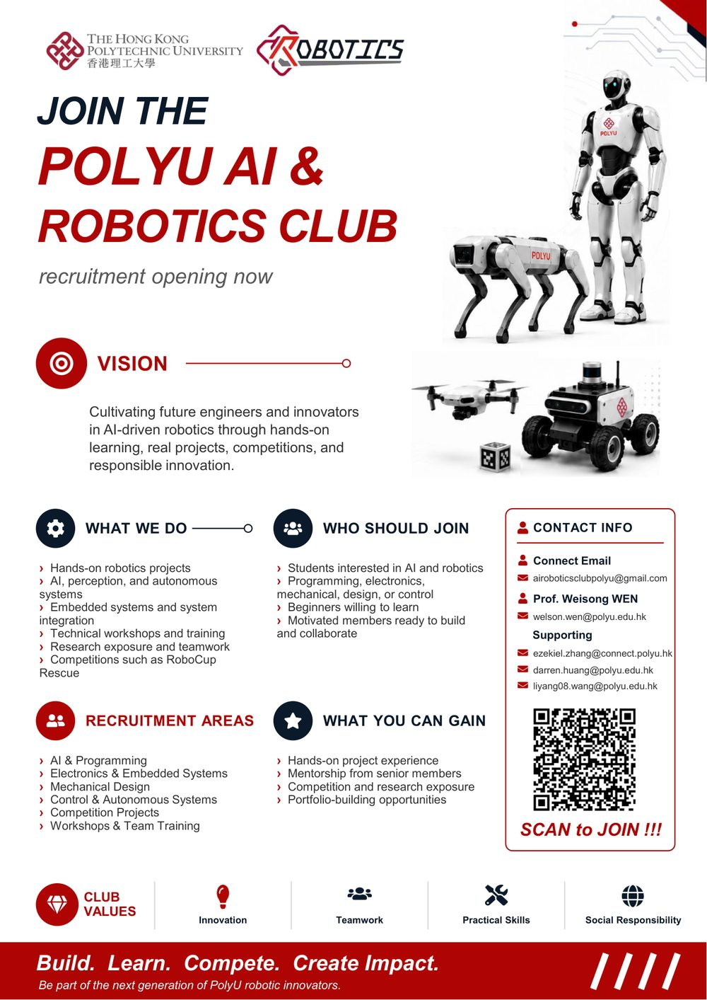
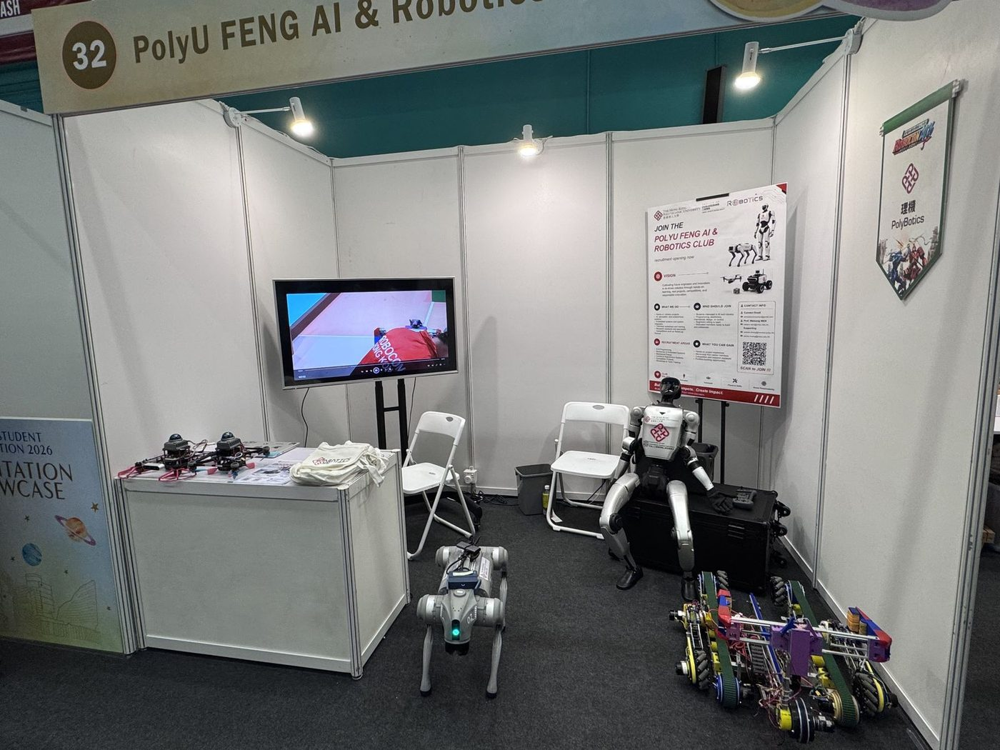
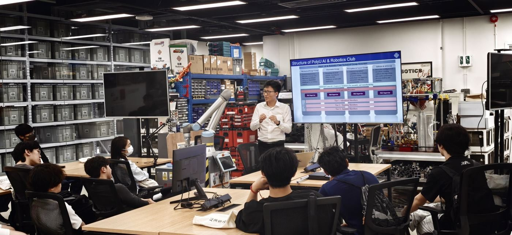
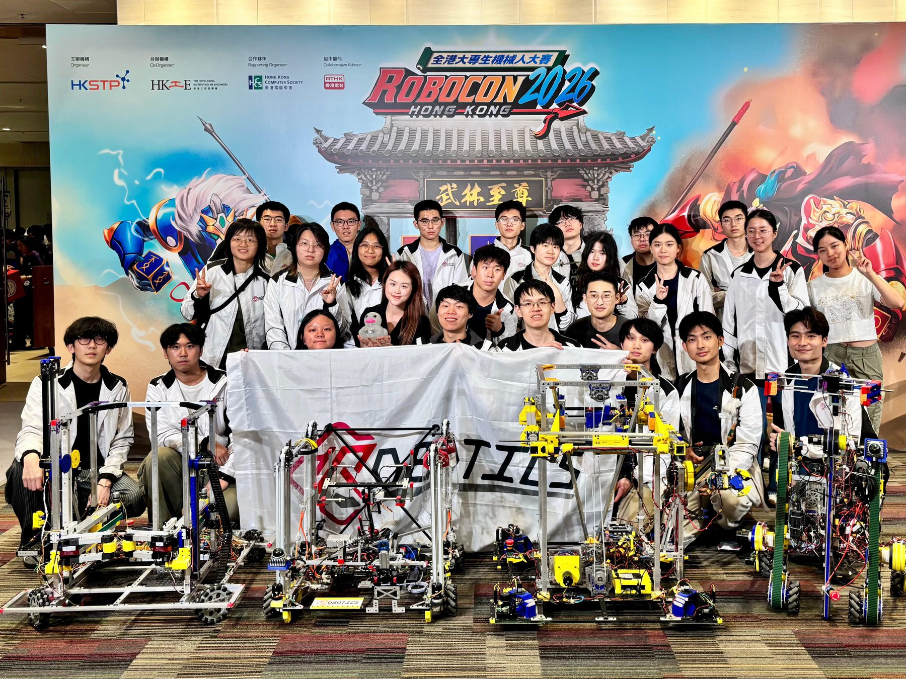
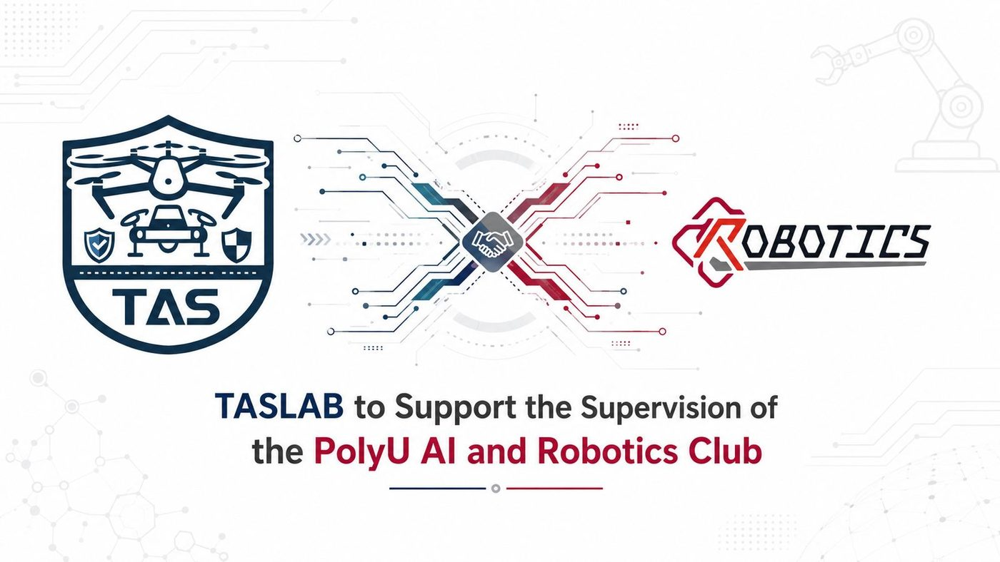
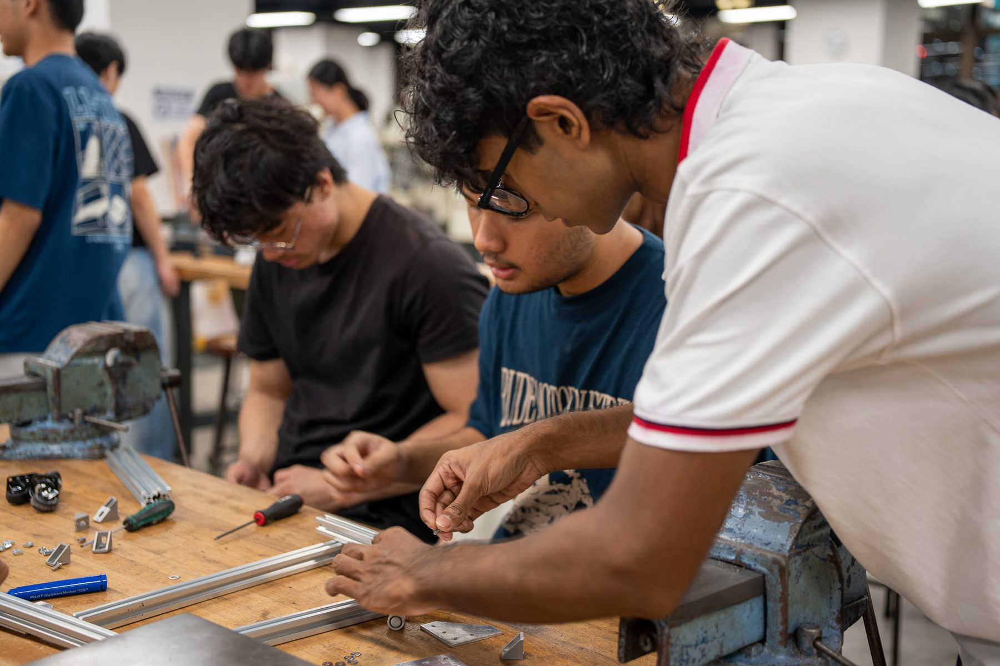
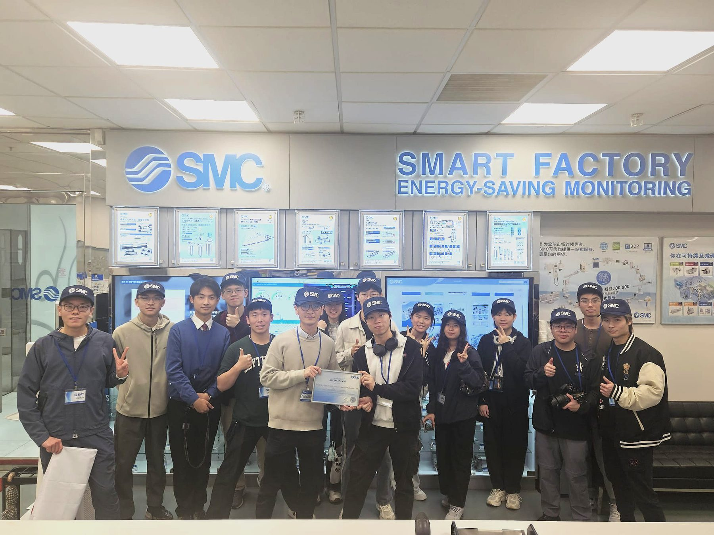
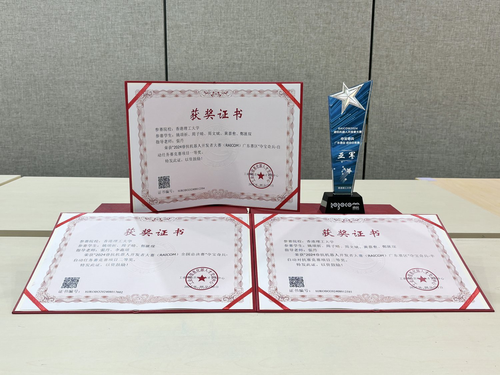

-

Club welcomes its External Advisory Board The club has invited leading researchers and industry leaders to form its External Advisory Board, including Prof. Fei Gao (Zhejiang University), Prof. Boyu Zhou (SUSTech), Prof. Chaoqun Wang (Shandong University) and Prof. Hui Kong (University of Macau), together with advisors from Tsinghua, Peking University, Northeastern University, Gammon Construction and Siemens. -

2026 recruitment: 203 applications received The 2026 recruitment campaign received 203 applications. Applicants take a baseline written test and a structured interview. Successful students are placed into a member tier and one of the four technical groups, then complete the safety induction and sign the club rules. -

Club showcase at PolyU Student Orientation 2026 The club welcomed new students at the PolyU Student Orientation with humanoid and quadruped robots, mobile robots and competition robots on display. Prof. Weisong Wen gave an information session on the club's vision and how students can take part. -

Club reorganisation briefing at the Industrial Centre Prof. Weisong Wen and the Industrial Centre briefed members on the club's new structure: three member tiers with public promotion criteria, four technical groups, a written proposal and oral defence for every funded project, and mandatory documentation and handover. -

Two PolyU teams compete at the Robocon 2026 Hong Kong Contest PolyU entered two teams, PolyBotics and Redbricks, in the Robocon 2026 Hong Kong Contest, where 15 teams from 9 local universities and institutions competed on the “Kung Fu Quest” theme. Each team built a manual Robot 1 and an autonomous Robot 2 for weapon assembly, Kung Fu Scroll handling in the Meihua Forest and a tic-tac-toe finish. -

PhD-level mentors join the supervision of the club Postdocs and PhD students from the Trustworthy AI and Autonomous Systems Laboratory (TAS Lab), led by Prof. Weisong Wen, began mentoring club members on drones, robot dogs and autonomous vehicles, with support from the Faculty of Engineering, Ir Professor H.C. Man and the PolyU Industrial Centre. -

Technical training workshops During 2025–26, 58 students joined the club's training workshops on safety and tool use, SolidWorks and fabrication, soldering and PCB design, CAN bus, motor control and PID tuning, Python and OpenCV, and system integration. The practical target was a mobile robot that can pick up objects and shoot balls. -

Visit to the SMC smart factory Members toured the SMC smart factory showroom to see pneumatic and automation components in industrial use, the same family of actuators used on competition robots. -

Photo archive: earlier seasons of the club Photos from earlier seasons of the PolyU robotics club: competition certificates, recruitment booths, training sessions and team workshops.